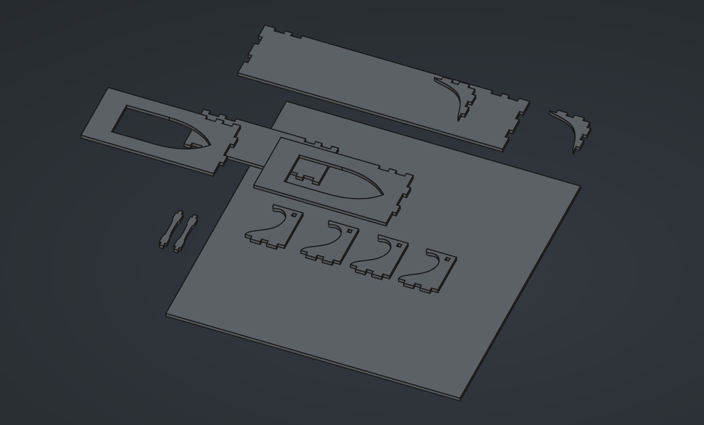

Table of Contents
Assignment
* Document the safety introduction details and general flow of using the machine.
* Make (design+mill+assemble) something big using a 15 mm thick and 120x120 cm big soft plywood sheet.
* Do a fitting test with a simple design first so that your parts are snug fit when assembling them and to avoid spoiling material. You will get one plywood sheet.
* Make sure you choose the right depth of cut (1/2 diameter of tool is safe) and calculate the feed rate (FR = SS * CL * NF) accordingly to avoid breaking the tool.Design
It took me a long time to decide what I wanted to make this week. It felt like every idea I had was either overly ambitious for the amount of material and time we had or plainly uninteresting and not useful.
Simple and useful was the goal, then. I decided to try to improve the organisation at my desk at home. My desktop PC was just on the floor next to my desk, so a simple stand could lift it up a bit and create some additional storage beneath it for my painting easel and tripod, which I had just been randomly stashing away somewhere nearby. Additionally I wanted an extra shelf above the small bookshelf under the desk for some generic storage space.
I made a couple sketches for the stand but quickly moved to Ondsel to just get started with the models. Legs connected with finger joints to the top board and opposing legs connected to each other.
Beginning with measurements and inputting them into Ondsel’s spreadsheet.
The workflow was quite familiar at this point. Create sketches, reference the spreadsheet’s cells to get the correct dimensions.

Even though the basic structure is dead-simple, I made an attempt to make it look at least a bit interesting by curving the legs in a similar style as I did with my previous cutting project. It looked odd though. The contrast of the curved and straight edges ended up looking somewhat jarring, I think. I didn’t want to spend too much time on just the design, so I moved on. I also didn’t want to risk the stability of the final object by adding too many holes and curves and making it too weird. A fair tradeoff considering my lack of experience.
I added a bit of curve to the cross-beams though. Getting appropriate constraints placed for the b-splines was a bit tedious. I wasn’t aware of any mirror or copy tool in the sketcher workspace so I just placed identical constraints on both sides.
Finished PC stand design. Lifting it just 20 cm off the floor. It still had to fit under the edge of my desk.
The shelf design was also really simple. Just two legs on the sides and a piece of wood in the corner to add some stability.
I created the shelf as a separate file. Spreadsheets in Ondsel (so presumably in FreeCAD also) are tied to a particular file, but they can still be referenced from other files. The autocomplete is fairly good, but roughly you would reference a cell like this:
<<file_name>>#Spreadsheet.parameter_name
So I just referenced the shelf parameters in the original spreadsheet and didn’t have to create a new one.
I used the boolean Cut operator in the Part workbench for the cutouts for the finger joints. It’s a much quicker workflow than using shape binders for this purpose and I also find it more intuitive. It creates a bit of nesting in the tree view, but with this level of complexity it’s perfectly manageable.
I roughly followed the process presented in the nesting and tool paths tutorial for assembling the pieces into the final layout. I saved each body as its own file, created a new file for the assembly and used the A2plus workbench (which had to be enabled from the addon manager) to import the files back. The workbench has a handy selection of constraints for positioning the pieces onto the same level.
From the draft workbench I then selected all the pieces and created Shape2DViews out of them and exported them out as a .dxf.
Milling
The most important thing to remember about CNC milling is to never do it alone. Someone should always be there when you’re in the room in case something goes wrong. The CNC machine is the most dangerous machine at the lab, and violent things can happen if clothes or hair or fingers get caught in it.
The first actual step of the process is importing the .dxf files to VCarve to create the tool paths. The imported file has to be converted into a curve, and then ungrouped because the conversion will turn everything into a single curve. The ungrouped path segments can then be merged by distance.
Calculating the correct feed rate is important and is done by multiplying three values together.
- Spindle speed is how fast the tool rotates. Predetermined for the machine, as I undestand.
- Chip load is determined by the material being milled. 0.6 - 0.7 is the range for soft and hard woods respectively.
- Number of cutting edges on the tool. In this case 2.
Since the milling tool has a thickness, and is round, sharp inner corners are impossible to create. Outer corners are doable. To compensate for this and to allow for such joints to fit together, fillets have to be cut in the inner corners to accommodate for the sharp edge that’s coming in. These can be created in VCarve or already in the CAD phase.
In my case, I had just exported the .dxf with sharp corners, so I had to add the fillets in VCarve. Problem was, the curve conversion turned turned even visually straight lines into bezier curves with handles. The dog bone fillet wouldn’t work on those. Thankfully these could be easily converted to straight lines just by hitting the l key. There will be a squiggle next to the cursor showing you can do this.
Tabs are also useful to add. Just a couple of tabs can stop a piece from moving after being cut out.
VCarve will show you a 3D preview of the cutting job, toolpaths and all.
For my project, there were some paths that had to be set to cut from the outside, and some from the inside. These were separated into two different toolpaths, but exported to the same file because there was no need to switch out tools for my project.
Remember to wear gloves when handling the materials. Especially in the case of wood, when you can get splinters.
We set the origin positions on the XY-axis to the bottom left corner. The Z-axis was set with the help of an additional tool, a small cylinder-like object hanging on the left of the machine. The machine knows the height of the object and lowers the tool onto it to determine the top of the material.
The cutting job had started. It was not necessary to be in the room while machine is running.
For a couple pieces it turned out that they weren’t set to be cut from the outside like they should, resulting in tabs that were too small. They were small enough to fit on the leftover section of the plywood stock, so we could just create a new toolpath with just the two shapes, properly set to cut on the outside.
When the job was finished, I removed the pieces from the tabs with a chisel. I was slightly hasty with this, so for a couple pieces I ended up trying to rip them out before a tab was cut off. This caused a bit of damage, but nothing too bad. Those parts wouldn’t be visible anyway.
The CNC cut edges end up being quite jaggy, so some sanding was needed to finish the surfaces before gluing.
All pieces in a pile.
One layer in the slots wasn’t cut, for some reason. A chisel was fine enough to finish them.
Assembly test. No offset was needed, and the pieces were a decently snug fit. Not tight enough to be sturdy without glue.
When the glue dried, both the shelf and the stand were nice and sturdy. I still wanted to sand them a bit and paint them a nicer color, but that had to wait.